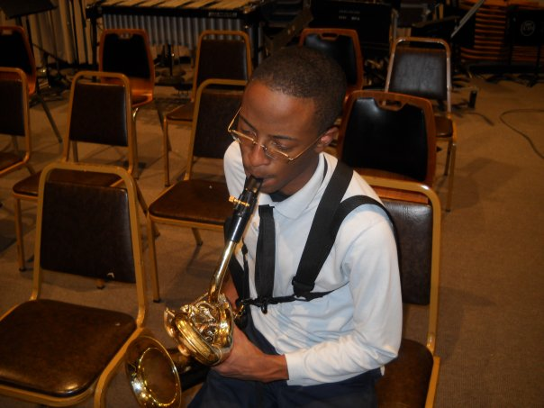
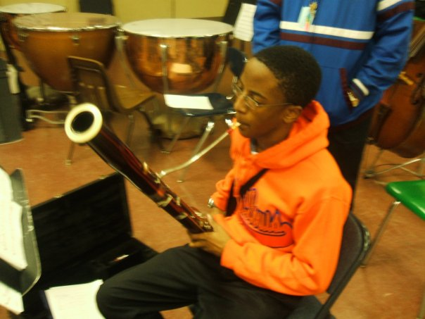
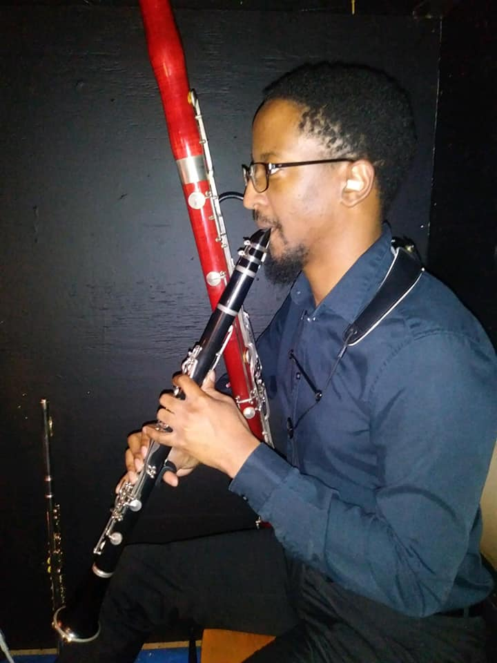
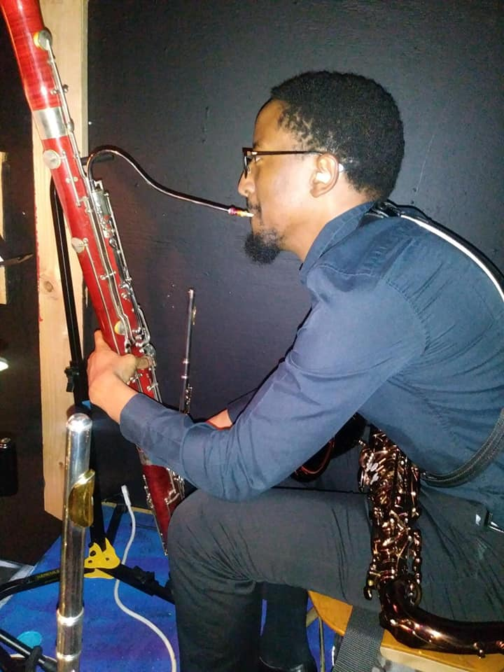
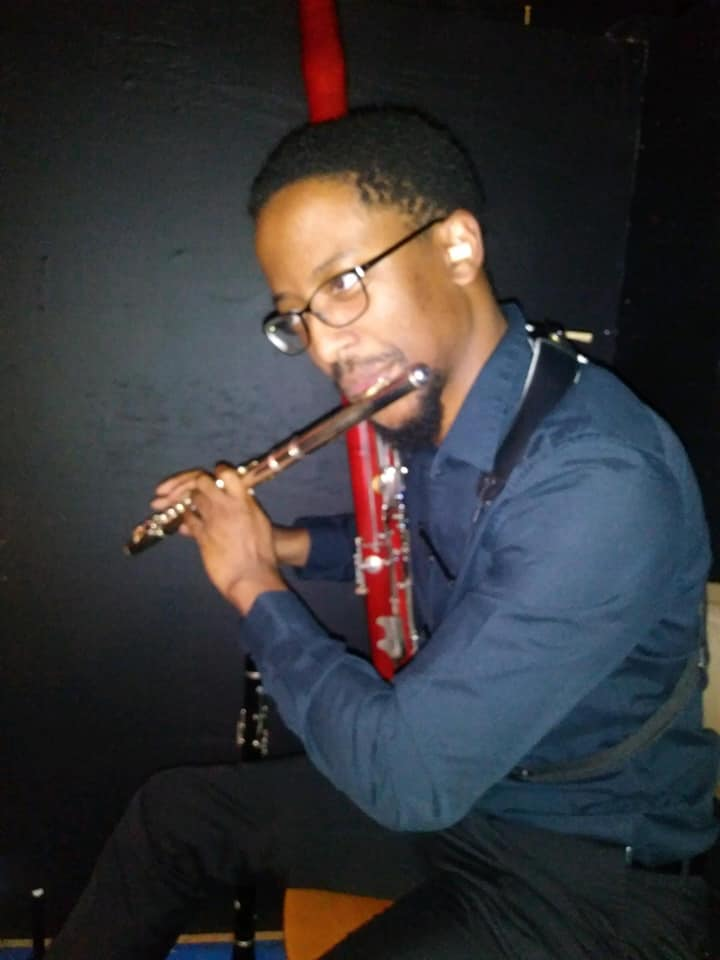

How I got started
I began playing music in the 6th grade. It took a little while to find an instrument that was a good fit for me. I jumped around from trumpet, then percussion, and finally saxophone which was the one that clicked for me.
I started off playing alto saxophone. My middle school band director made a small jazz band that introduced me to that style of music. Later on the high school jazz band director visited our school for recruitment. He introduced me to the baritone saxophone (bari sax for short), which ended up being my favorite saxophone to play. Since then I have always had an attraction to low voiced instruments.
 During sophomore year of high school I was introduced to the bassoon. I continued to play bari sax in the high school jazz band off and on, but I primarily played bassoon in concert band. At this point I declared bassoon as my primary instrument. My eventual goal was to play in orchestras which I never had the opportunity do up until this point.
Education
I then went to study bassoon at the University of Missouri-St. Louis. I played in the university wind ensemble and orchestra. In 2012 I also had the honor of auditioning into the St. Louis Symphony Youth Orchestra (SLSYO). The three years I spent in the SLSYO provided me tremendous growth in my orchestral playing. I continued playing in university and local orchestras through my master's degree (even though it wasn't in music) and today.
Today
  As a freelance musician I continue to work on my marketability as a performer. In 2012 I played in the pit orchestra for the musical Oliver!. In 2014 I played my first musical as a doubler (playing more than one instrument for a show). This allowed me to use my saxophone and bassoon experience. It also began my studying clarinet and flute. I would say that I have the most fun playing for musical theater. I get to play really fun music and create fun memories with my fellow musicians and the actors we support.